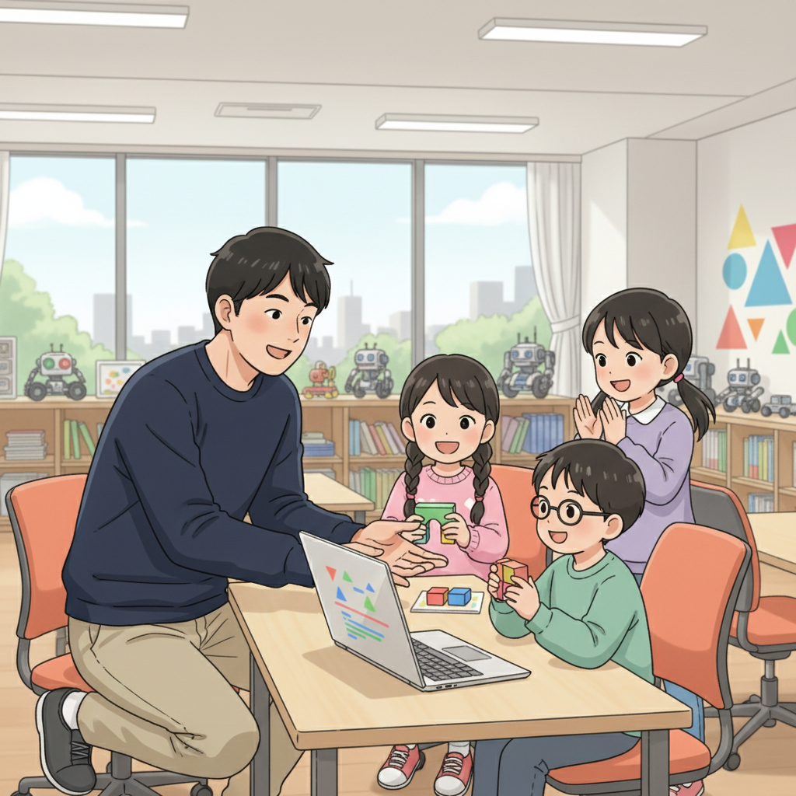

「苦手」を「好き」に変える魔法！塾頭の想い
「発達障害」という言葉を聞くと、どうしてもネガティブなイメージを持ってしまうかもしれません。でも、if塾では、それを才能の入り口だと考えています。大切なのは、自分の特性を理解し、それを活かせる場所を見つけること。そして、好きなことに没頭する力こそが、大きな強みになるんです。
私自身、臨床心理士として、またITエンジニアとして多くの子どもたちと出会ってきました。その中で強く感じたのは、彼らの可能性は無限大だということ。特に、AIやICTといった分野は、彼らの才能を最大限に引き出すための強力なツールになり得ます。
たとえば、発達障害を持つある生徒は、学校の勉強にはなかなか集中できませんでしたが、プログラミングに出会ってから驚くほど集中力を発揮し、メキメキとスキルを伸ばしていきました。彼は今、AI技術を駆使したアプリ開発に挑戦しています。
発達障害 プログラミングの相性の良さは、彼らの持つ独特な視点や、一つのことに深く集中する力にあるのかもしれません。if塾では、そんな子どもたちの「好き」を「得意」に変えるためのサポートを全力で行っています。
ゲーム好きが高じてCTOに！集中力が生んだ驚きの技術
CTOの井上は、高校生の時に私と出会いました。彼は幼い頃からゲームが好きで、その情熱は誰にも負けませんでした。しかし、学校の勉強にはなかなか身が入らず、悩んでいた時期もありました。
そんな彼がプログラミングに出会ったのは、if塾がきっかけでした。最初はゲームを作るためのツールとしてプログラミングを学び始めたのですが、すぐにその奥深さに魅了され、独学でどんどんスキルを磨いていきました。
彼の集中力は本当に凄まじく、一度プログラミングに取り組み始めると、周りの音が全く聞こえなくなるほど。その集中力こそが、彼の発達障害特性が生み出した才能だったのです。今では、if塾のICT教育を支える重要なメンバーとして、子どもたちにプログラミングの楽しさを教えています。
彼が開発したAI教材は、子どもたちの個性に合わせた学習プランを自動で作成し、苦手な部分を徹底的に克服できるよう設計されています。まさに、彼の情熱と才能が詰まった教材と言えるでしょう。
特別支援学級から国立大学へ！塾長の経験が力になる

塾長の山﨑は、ADHDとASDの診断を受け、中学時代は特別支援学級に通っていました。彼自身も、学校生活に馴染めず、苦しい思いをした経験を持っています。
しかし、高校で私と出会い、自分の特性を理解し、受け入れることで、大きく成長しました。大学では心理学を専攻し、自身の経験を活かして、同じように悩む子どもたちのサポートをしたいと考えるようになりました。
彼は、子どもたちの気持ちに寄り添い、小さな成功体験を積み重ねることで、自信を持てるように導いてくれます。例えば、プログラミングで簡単なゲームを作ったり、AIを使って自分の興味のあることを調べたりすることで、達成感を味わってもらうのです。
彼の存在は、発達障害を持つ子どもたちにとって、大きな希望となっています。彼は、自身の経験を通して、彼らに「自分にもできる」という勇気を与えているのです。
「好き」を仕事に！学生起業家が語るAIの可能性
if塾から巣立った学生起業家の加賀屋は、高校生の時にAIに興味を持ち、独学で勉強を始めました。彼は、AI技術を使って、社会問題を解決したいという強い想いを持っています。
彼は、学生起業 ITという道を選び、AI技術を駆使したアプリ開発に挑戦しています。彼のアプリは、発達障害を持つ子どもたちの学習支援を目的としており、個々の学習状況に合わせて最適な学習プランを提供します。
彼の成功の秘訣は、自分の「好き」を追求し続けたこと。そして、if塾で出会った仲間たちとの協力があったからこそ、夢を実現することができたと言います。
私たちは、彼のような子どもたちを、これからも応援し続けます。彼らの才能を最大限に引き出し、社会に貢献できる人材を育成することが、if塾の使命だと考えています。
🎯 興味を持っていただいた方へ
if塾では、発達特性を持つ子どもたちの「好き」を「才能」に変える教育を行っています。現在の記事内容と実際の活動に大きなズレはありませんが、詳細については直接お問い合わせください。
📌 記事について
この記事は、塾頭による完全自動化への挑戦としてAIが自動生成しています。将来的には塾頭が執筆しているような記事になることを目指しており、現時点では事実と異なる内容が含まれる可能性があります。最新の正確な情報については、お問い合わせフォームよりご確認ください。
🤖 Generated with AI - if塾のブログ自動化プロジェクト